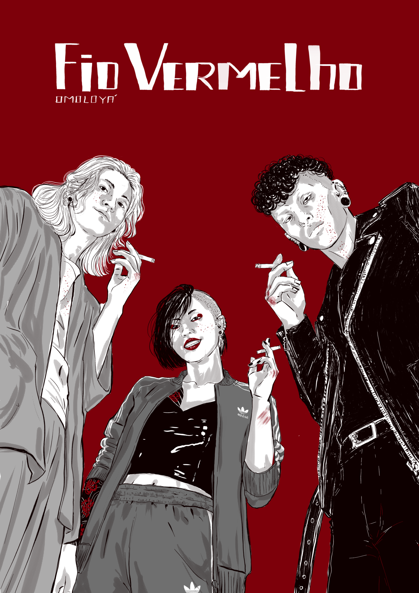

Fio Vermelho
Dizem que o destino une pessoas por um fio vermelho invisível. Em Chinatown, esse fio é feito de fibra ótica, graxa de mecânica e um pouco de sangue que a gente aprendeu a limpar com lenço e água sanitária.
Kensuke Shinoda não quer salvar o mundo; ele só quer comprar o pudim favorito do pai, jogar video-game com a namorada doidinha e garantir que o seu melhor amigo não quebre a mobília durante um ataque de raiva. O problema é que, no mundo em que eles vivem, o sistema força você a ser um monstro só para conseguir ter uma noite de sono tranquila.
Esta não é uma história sobre heróis ou vilões. É uma crônica sobre uma família que o mundo tentou descartar, mas que decidiu se unir para viver, em lealdade e talvez aprender a amar, mesmo que, para isso, precisem 'resolver pendências' sangrentas antes do jantar. Afinal, o que é um corpo enterrado no quintal quando se tem uma maratona de anime para terminar?
Bem-vindo à rotina bizarra, afetiva e letal de quem aprendeu que, para não ser engolido pelo sistema, você precisa ser o dono dele.